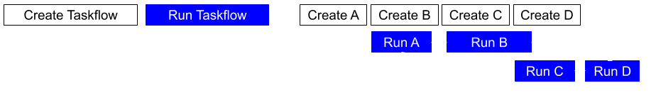

Taskflow supports creating task graphs dynamically using dependent async tasks so you can handle more challenging parallel problems in a dynamic environment. This type of task graph construction is referred to as dynamic task graph programming (DTGP). We recommend reading Asynchronous Tasking before this page.
The standard Taskflow model is construct-then-run: you build the entire task graph upfront with tf::Taskflow, then hand it to tf::Executor to execute. This model is also referred to as static task graph programming (STGP), which is clean, predictable, and efficient for workloads whose structure is known before execution begins. However, two scenarios of problems cannot be handled well by STGP, explained below:
Consider a workflow where the structure of the task graph — how many sub-graphs exist, which ones run in parallel, which depend on which — is decided entirely by runtime conditions and properties of the graphs themselves:
Building this statically would require enumerating every possible branch as a separate pre-built taskflow and selecting one at program start. That approach is brittle, wasteful, and breaks down completely when the branching logic depends on properties of the graphs themselves — as shown here, where the structure of G1 and G2 determines what runs next. Dynamic task graph programming solves this directly: sub-graphs are created and wired as control flow unfolds, so the final graph matches the actual execution path exactly.
In large graphs, constructing every task node can itself take non-trivial time — allocating buffers, loading metadata, resolving file paths. With construct-then-run, all of that setup must complete before a single task begins executing. With dynamic task graph programming, a task can begin executing the moment its dependencies are satisfied, even while downstream tasks are still being constructed. This overlap between graph creation and task execution can significantly reduce end-to-end latency.
The figure below illustrates this difference on a four-task graph. In the static model, the entire taskflow is constructed before any task runs. In the dynamic model, execution of early tasks overlaps with the construction of later tasks:

Taskflow's dependent-async API, tf::Executor::dependent_async and tf::Executor::silent_dependent_async, is designed precisely for these scenarios. Each task is submitted individually with an explicit list of predecessor tasks, and the executor begins running it as soon as all predecessors complete, without waiting for the rest of the graph to be defined.
tf::Executor::silent_dependent_async and tf::Executor::dependent_async create a dependent-async task of type tf::AsyncTask and schedule it for execution as soon as its dependencies are satisfied. tf::Executor::dependent_async additionally returns a std::future that eventually holds the result of the callable.
The example below dynamically creates the following diamond task graph, where A runs first, B and C run in parallel after A, and D runs after both B and C:
Because task execution begins as soon as dependencies are met, this model requires you to express tasks in a valid topological order — you can only name a task as a predecessor after it has already been created. For the diamond above there are two valid orderings; the alternative is:
In addition to synchronising on a specific task via its future, you can wait for all outstanding dependent-async tasks using tf::Executor::wait_for_all:
Both tf::Executor::dependent_async and tf::Executor::silent_dependent_async accept an arbitrary number of predecessor tasks as variadic arguments. When the number of predecessors is not known until runtime — for example, when it depends on the size of a data set — you can use the iterator overloads that accept a range [first, last):
The iterator's dereferenced type must be convertible to tf::AsyncTask. The example below creates a final task that depends on N previously created tasks, where N is a runtime variable:
You can also create dependent-async tasks from within a running task that has access to a tf::Runtime object, using tf::Runtime::dependent_async and tf::Runtime::silent_dependent_async. The API mirrors the executor-level interface, but with one important distinction: all dependent-async tasks spawned from a runtime are parented to that runtime and are implicitly joined at the end of its scope. This means the runtime task does not complete — and control does not pass to the next task in the graph — until every dependent-async task it spawned has finished. This property is especially useful for implementing dynamic sub-graphs inside a larger static graph: a single runtime task can build and run an entire dynamic task graph as part of one logical step, with the surrounding graph remaining unaware of the internal structure.
The example below shows a static graph where task A dynamically builds a diamond sub-graph at runtime. Task B is guaranteed to see the results of the entire sub-graph because the implicit join ensures all sub-tasks finish before A completes:
Since tf::Executor::dependent_async and tf::Executor::silent_dependent_async are thread-safe, multiple threads can collaborate to build the same dynamic task graph concurrently, provided the overall topological order is respected. The example below uses three threads to build a graph where B and C both depend on A:
Regardless of whether t1 runs before or after t2, both orderings (ABC or ACB) satisfy the dependency that B and C follow A.
tf::AsyncTask is a lightweight handle that holds shared ownership of the underlying task object. This shared ownership ensures the task remains alive when it is added to the dependency list of another task, preventing the ABA problem that would arise if the task were destroyed before its dependents had been registered:
tf::AsyncTask is implemented in a similar way to std::shared_ptr and is cheap to copy or move. When a worker finishes executing a dependent-async task, it removes the task from the executor, decrementing the shared owner count by one. The task is destroyed when that count reaches zero.
tf::AsyncTask::is_done returns true once the task has finished executing its callable, and false before that point. This is useful when you need to check whether a specific task has completed before proceeding, without blocking the calling thread. Consider a scenario where a main thread submits a chain of data-processing tasks and needs to verify the results of an intermediate stage before deciding what to submit next:
std::future::get while inside the executor can cause deadlock if all workers are blocked waiting for tasks that cannot be scheduled. See Execute a Taskflow from an Internal Worker Cooperatively for more details.